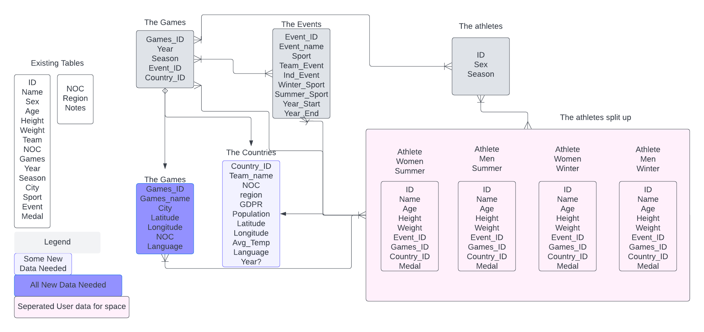

Olympics data with SQL and pandas
Using SQL and Pandas to understad Olympic data

Introduction
This project looks to understand the changing nature of the Olympics and how it reflects changes in athletes, sporting activities, and global politics. The Olympic Games are considered the world’s foremost sports competition with more than 200 nations participating [1,2], and in Tokyo in 2020 there was a broadcast audience of more than 3 billion with estimates of 3 out of 4 people following the Olympics [3].
Since it’s inception over 100 years ago many changes have occured. In global politics countries have split and unified, populations have changed and the power distribution across nations fluctuated. In society there have been changes in the rights and roles of women. Finally, in sport there has been a move from amateur atheletes to professionalism and a change in the popularity of different sports.
Due to it’s global importance, the question this work looks to answer is if data on the Olympics reflect the changes that have occured in the world.
1.“Overview of Olympic Games”. Encyclopaedia Britannica. Retrieved 4 June 2008
The Data
The most important part of any analysis is the data. In Olympics data with SQL and pandas- create the tables I present the data to be analysed and do some initial processing.
The main thing here is to seperate the data into useable tables for analysis, as summarised in the entity relationship diagram (ERD) below.

Analysis
Based on a brief analysis of the data three broad questions to be investigated were posed:
- What are the characteristics of athletes? How does this change with time, and can it be linked with societal or global changes?
- What countries do better at the Olympics? Is there a way to quantify this?
- What is the influence of a games being a home event?
In the following parts these are explore in more detail.
Athlete Analysis
I did some initial plots on the changes in the characteristics of athletes given in the data, height, weight and age, of athletes attending the Olympics by year (see below).
From these plots I was really intrigued as to what may be the cause of these changes.
Mainly what was happening between 1960 and 1980 were there seemed to be changes in each of the parameters?
My initial thought was this could be related to some combination of - a switch from amateurs to professionals - the Cold War between USA and USSR - an after effect of WWII
Nation Analysis
Due to the global importance of the Olympics, in 2020 there was a broadcast audience of more than 3 billion, I was interested to explore whether countries with the most medals will reflect global politics. And to see if the countries with most influence get more medals.
Games Analysis
In this part the hypothesis considered is:
At a home Olympic games a nation will on average obtain more medals than at other games- But can we quantify this effect?
- Are there any residual effects before and after the games?
- What about a home continent games?
Presentation
To present this data in a unified form the following presentation was produced.
This is a hypothetical presentation:
Who
The audience is a fictional research group at Swansea University (UK) called the Sports History Group.
This group is a cross-departmental, working across the History and Sports Science department. The group consists of two lecturers (one in each department), three post doctoral researchers, five PhD students and three Masters students.
Why
The work I am presenting has overlap with several of the reserachers/students.
The main goal is a scoping exercise with one of the post doctoral researchers and the two lecturers who have identified a grant proposal. The Olympics commitee have put out a grant application. The aim of this is to produce a report on the influence the Olympics has had on Geo-Politics and on Athletes and Sport in general. With guidance on what the Olympics can do in the future to maintain and enhance its globally importance, and how it can positively impact Olympic athletes.
What / How
More details are in the presentation